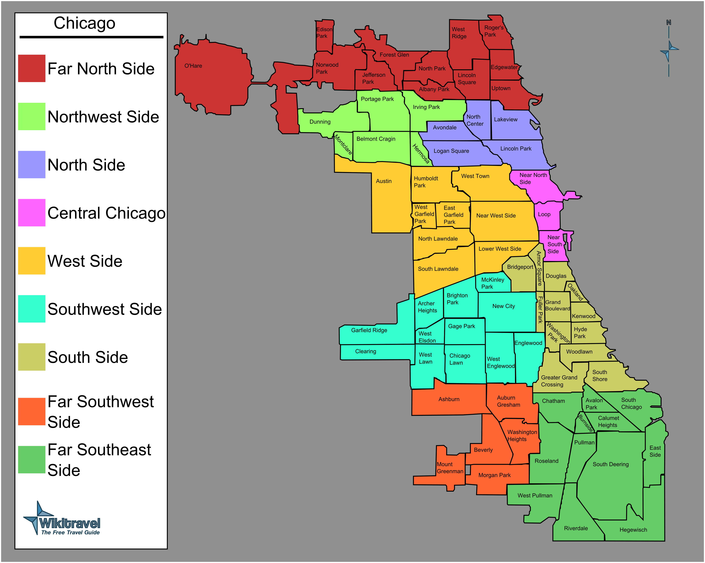
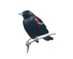
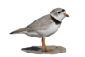
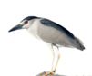

Red-winged Blackbird
Broad-shouldered with a slender, conical bill. Males have distinct red shoulder patches with a yellow border while females are brown and heavily streaked. Usually found in the Spring until Fall.
Hover the pointer over the birds in the map to view a description of the bird!


Broad-shouldered with a slender, conical bill. Males have distinct red shoulder patches with a yellow border while females are brown and heavily streaked. Usually found in the Spring until Fall.

Very pale, with light tan feathers on the back and head; white feathers on the front side. Breeding adults have a single, black band of feathers around the neck that may go entirely across the throat. Bills have a black tip and an orange-yellow base. They are found during Spring.
Medium-sized songbirds. Both sexes of Northern Cardinal have a crest, but the male is fully red with an orange beak while the female is duller with a massive pink bill. These birds can be found year-round in Chicago.

Stocky and heavy-bodied. They are more active at dusk than during daytime. Adults have a distinguishable black cap and back, gray wings. Present in the Spring and Summer months.
Stocky with thick blunt-tipped bill. Male Scarlet Tanagers have striking blood-red bodies set off by jet-black wings and tail; females are yellowish-green and dark-winged. Found during the Spring and Summer.